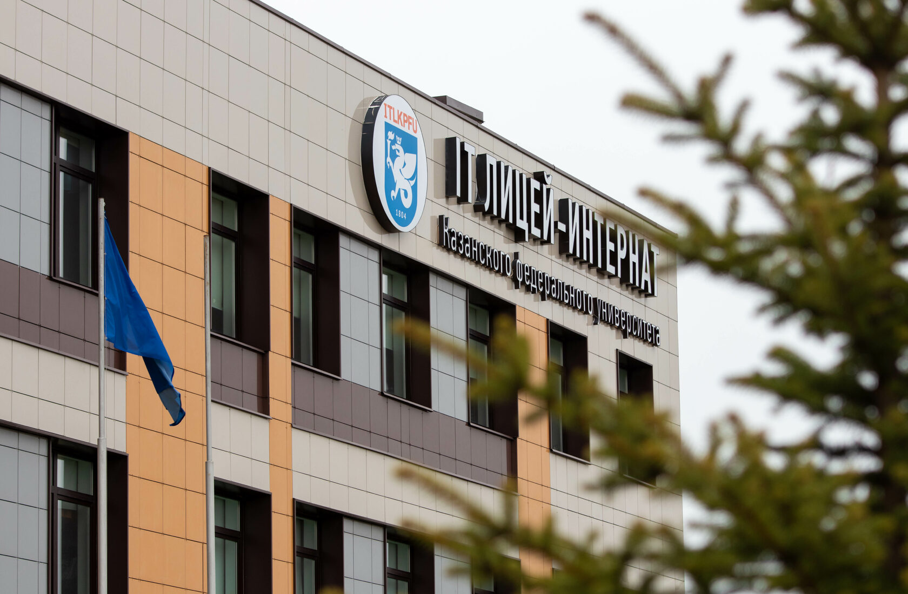
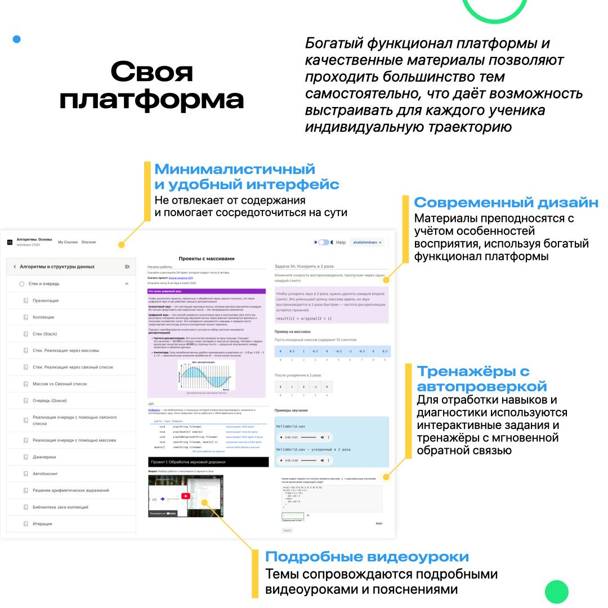

10 дней в одном ритме
Каждый день участники возвращаются к задачам, коду и разбору ошибок, поэтому прогресс становится заметнее.
Летние интенсивы
Две летние программы: олимпиадная информатика в IT-лицее КФУ для 12-17 лет и практический вход в программирование в Fethiye для учеников 4-6 классов.

Казань · 15-25 июня Летний интенсив по олимпиадной информатике в IT-лицее КФУ10 дней программирования, алгоритмов и олимпиадных задач для школьников 12-17 лет.

Fethiye · 1-10 июля Летний IT-интенсив в Fethiye10 дней программирования через робота-исполнителя, графику, анимации и простые игры для учеников 4-6 классов.
Онлайн-курс learncs.ru остается регулярным форматом на весь год. Лагерь — короткий очный рывок: больше концентрации, больше практики за 10 дней и образовательная среда вокруг ребенка.
Каждый день участники возвращаются к задачам, коду и разбору ошибок, поэтому прогресс становится заметнее.
Вокруг школьники с похожими интересами, преподаватель рядом и понятный режим дня.
После лагеря проще выбрать дальнейший трек: олимпиадная подготовка, проектное программирование или регулярные занятия онлайн.